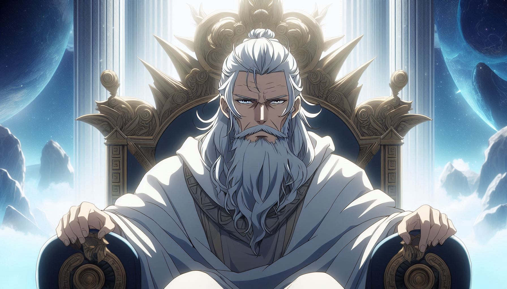
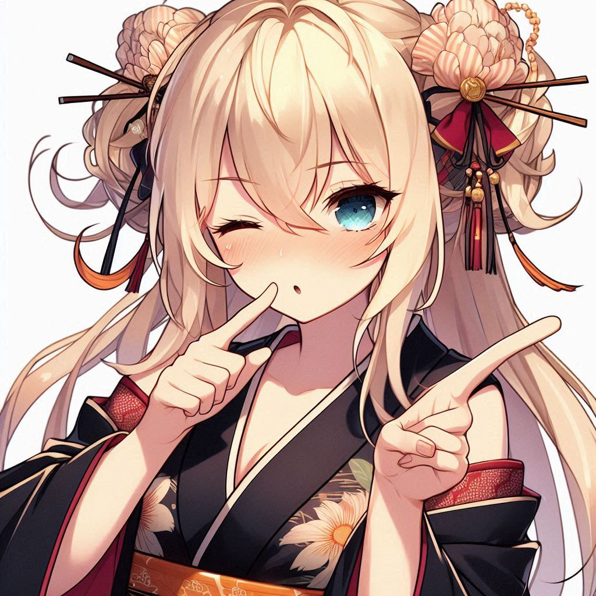

"Atenas ardía. Las llamas devoraban sus templos como bestias sedientas, la sangre empapaba el mármol sagrado, y el aire—antes perfumado de olivo y sabiduría—ahora gritaba con el olor a hierro y ceniza. Solo quedaba una verdad: la muerte llegaba cabalgando sobre el humo, y no perdonaría a nadie que osara seguir en pie."
-JAJAJA, me estás diciendo que tengo que ayudar y cuidarlos en todo momento?- protesto Zeus
-SI!,ellos nos adoran día tras día,es lo menos que puedes hacer!- gritó con rabia Apolo.
-te voy a demostrar que aún que les haga sentir el peor dolor, ninguno se quejara,incluyendote a ti Apolo…- murmuró en tono sádico Zeus,
-está bien!,ya no diré más,pero no les hagas nada a ellos, no lo merecen!.
"En Atenas durante los años (450 a.c) un joven corría a toda velocidad,camino a casa después de su labor como herrero;(al parecer iba bastante nervioso…)"
-Otra vez llegas tarde!- dijo Eirini cruzando los brazos- o es que solo no tienes percepción del tiempo?,
"cómo es que ella me hace sentir culpable de tardar?,o es acaso que esos ojos azules brillantes me tienen hipnotizado?,jaja mide aproximadamente 1,60 no tiene mi misma fuerza pero la respeto,quizás hoy su cabello dorado brilla más que el sol,que linda es, o tal ves solo estoy cansado".
-perdoname,tan solo me quedé trabajando más jeje- entre nervios dijo Nikolaos.
-eres muy distraído sabés!,te amo y lo sabes pero pareciese que me haces esperarte para que me enamore mas,Cres que también por ser muy fuerte,medir 1,70 no te pasará nada,me gusta verte nuevamente y saber que regresas con bien Nikolaos, (aparte odiaría no poder ver nuevamente tu cabello rizado y esos ojos cafés tan lindos que reflejan tu amor…)- dijo entre rabia y tristeza Eirini.
-jaja la amo-Nikolaos se acerca a abrazar con calma a Eirini para calmarla,
-sabes que te amo verdad,pero aveces no ayudas!- grito Eirini,
tengo sueño y hambre,pero primero a solucionar mis tonterías-
,Eirini déjame prometerte que no volveré a crear preocupaciones en tu mente y corazón,te amo más que a nada y hasta cuándo estoy en mi labor de herrero pienso en ti a todo momento,ya que hasta el calor del fuego me hace recordar lo cálido de tu ser, por favor déjame enseñarte que te amo y seguiré aquí dándote lo que tú nombre significa “paz!”- en tono romántico dijo Nikolaos.
-esta bien me convenciste,ahora vamos a dormir!- cruzando los brazos- gritó Eirini llena de orgullo.
("Ya una vez en cama un extraño pensamiento llegó a la mente de Nikolaos")
"será que,pueda cumplir lo que he dicho,lograre protegerla y estar siempre con ella?,como lo hare?,soy lo suficientemente fuerte para cuidarte Eirini?,como hare es que simplemente no lo sé…"-.
-los quiero a todos muertos!!,nadie vivirá entiendes,aún que trates de pelear o te levantes una y otra vez vas a morir y todos los que te rodean lo harán,no evitarás que te muestre mi poder y nada logrará que la muerte deje de perseguir lo que señalo con diversión!!- entre risas de maldad y gritos de agonía se escuchaban estás palabras,una extraña silueta de un guerrero ensangrentado entre las llamas se veía entre oscuridad,¿¡Quién será!?.-
(estás imágenes abundaron esa noche en el sueño de Nikolaos ,quitándole la paz del sueño que ameritaba tener).
-¿¡Que ha sido eso!?,¿Por qué vi eso…?,"tranquilo,tranquilo,mejor dormiré nuevamente…" -volviendo a recostarse entre miedo-.
"Llega la mañana y Nikolaos desayuna junto a Eirini, transcurriendo así día tras día,él iba y venía, trabajando como herrero seguía,pero el recuerdo de aquel sueño lo atormentaba en todo momento "-.
-¡Estoy harto!,forjó herramientas sin parar y aún que me concentre al cien en ello no logro dejar de pensar en eso, ¿por qué será?- exclamó en agonía Nikolaos golpeando fuertemente la mensa donde forjaba una espada-.
"quizás caminar un poco pueda relajar y aclarar mi mente"-está bien eso haré!!- entusiasmado sale a caminar,
-Atenas sigue tan bello como siempre jaja- suspira con alivio
-ese aroma a olivo es tan satisfactorio…- ver cómo entre estás pequeñas calles ,ciudadanas con peplos azules y dorados caminan con cestas de higos ,mientras los pequeños niños persiguen a los perros callejeros cercas de las fuentes es bastante agradable,en los talleres los artesanos moldean bronce para armaduras y estatuas de hoplitas,es un lugar agradable…-
-(Atenas es la misma definición de esplendor y contradicción, democracia para algunos, esclavitud para otros…)-.
-quizás ya debo volver a trabajar,hoy no puedo tardar en regresar a casa,Eirini se enojaría horrible conmigo si vuelvo a entretenerme en otras cosas,esa mujer si que tiene carácter!...- suspiro sumergido entre alegría y miedo Nikolaos.
-¡¡Zeus entonces la orden que le haz dado no era broma!!,como te atreves a decir tal cosa cuando nadie se ha levantado en contra tuya,no sabes qué podría pasar!!- contestó con firmeza de quién desconocemos identidad.

-Así es, estoy dispuesto a hacer lo necesario para mostrarles a ustedes y a los mortales que ninguno está sobre mí y si creen eso los reto a desafiarme,pero ni así vencerán y se los advierto!!- grito con orgullo y furia el gran Zeus.
-mírate eres viejo, tal vez aún estás en condición anciano,mides como cuánto,¿1.65?,tu cabello está canoso y te queda poco,dime cómo te queda tanto poder?-;("tu apariencia engaña pero ese poder en verdad me hace temerte")-en verdad no sé por qué sigo tus órdenes,tan solo eres un desgraciado bastardo!-.
"tengo que pensar en algo, quizás buda sepa que hacer,pero no puedo dar sospechas en absoluto…" -se arma con una armadura vino oscuro y camina lentamente sin rumbo-.
-¡Seguiré tus órdenes Zeus pero ni creas que soy tu lacayo!-.
-sigues siendo un pequeño niño de los que les brinde poder,no eres más que un simple perro negro buscando comida y poder ante mi,se que tienes miedo,pero ohh el pequeño no lo dirá por qué sabe que perderá,o es acaso que sientes que puedes ganarme?,si es así te doy la oportunidad de pararte frente a mi y tratar de asesinarme entiendes!!- grito bruscamente Zeus.

Un cierre temporal para este capítulo, donde los protagonistas reflexionan sobre lo ocurrido y se preparan para lo que viene. La narrativa fluye con naturalidad hacia el siguiente capítulo.